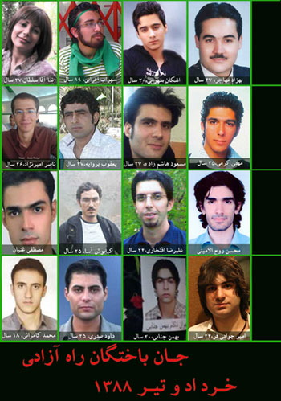

پذيرش > اخبار > مراسمی به بهانه یادبود شهید بهزاد مهاجر

 مراسمی به بهانه یادبود شهید بهزاد مهاجر مراسمی به بهانه یادبود شهید بهزاد مهاجر
17 مرداد 1388 - - نسخه قابل چاپ

تغییر برای برابری - 15مرداد 88- نوشته "برای کسی که پنجاه روز بعد از مرگش، جنازه اش را تحویل خانواده اش می دهند چه مراسمی باید گرفت؟"
مانده ایم مراسم برای کی؟ ندا؟ سهراب؟ اشکان؟ بهزاد؟ یعقوب؟ مهدی؟ کیانوش؟ مسعود؟ ناصر؟ علیرضا؟ مصطفی؟ محمد؟ محسن؟ داوود؟ امیر؟ بهمن؟
همه هستند. همه عکسها. همه شهدا. یک اندازه. روی یک دیوار. تشخیص نمی دهی مراسم کی است. یا اینبار خوب تشخیص می دهی. مراسم همه است. همه کسانی که جنازه هایشان را تحویل گرفتیم. از ندا که تمام لحظات جان دادنش را دنیا دید تا همه آنهایی که جان دادنشان را ندیدیم، اما نگران و مضطرب هر روز و هر شب فاصله بین دادگاه انقلاب و اوین و بعد به تدریج کهریزک و پزشک قانونی را طی کردیم. یادت مانده؟ همه آنهایی که بدنهای تار و مار شده شان داغ لحظات جان دادنشان را همیشه تازه نگه می دارد. چه بسا عکس جسدهای همه اینها را تو هم که به دنبال عزیزت بودی دیده ای و نشناختی. اما حالا دیگر برای همیشه تاریخ می شناسیمشان.
16 رز سرخ، نمی دانم این سرخی است که به سیاهی می زند یا داغ است که سیاهی را سرخ می کند.
خواهر های بهزاد هستند که زیر این همه عکس نشسته اند، اما مادر سهراب که می رسد نمی دانی این ناله برای کدامشان است. یا این شیون بر کشتندهء کدامشان است. یا این مردمی که نمی شناختیشان و آنها نیز، اینجا چه می کنند؟ از تو سراغ صاحب عزا را می گیرند ولی اشک چشمانشان و خشم صدایشان جهت سوال را گم می کند. چه فرقی می کند خواهران و برادارن بهزاد را نشانشان بدهی یا آیینه را. اینها همه یکی شده اند. پدر امير جواديفر بي صدا و آرام ايتداي مراسم آمد و رفت، گويا شتاب داشت شب جمعه را كنار فرزندش در بهشت زهرا بگذراند.

مادر سهراب اعرابی می گوید که پسر 19 ساله اش به هیچ کدام از آروزهای جوانیش نرسیده بود. نمی دانم صدای بلندگوها به اندازه کافی هست که برادران مامور که در کوچه قدم می زنند این جمله ها را بشنوند یا نه؟ تلخ ادامه می دهد که کشته شدن علیرضای 12 ساله به تازگی نداشتن هیچ رحم و مروتی را از اینها خوب معنی می کند. و سکوت او را صدای نوایی پر می کند:
" خانه ام آتش گرفته است، آتشی جانسوز...
من به هر سو می نهم این را، در نهیب آتش پر دود...
از درون خسته سوزان می کنم فریاد، ای فریاد، ای فریاد...
وای بر من ...
وای بر من سوزد و سوزد غنچه هایی را که پروردم به دشواری..."

و تمام فریادهایی را که هدیه می آورند مردم . مریم های سفید. رزهای سرخ. و سبزهایی که روبانهای سیاه دارد.
سراغ سابقه آشنایی که می گیریم، می گویند از راه دور آمده اند. می گویند از همین حوالی آمده اند. می گویند برای ستایش این خون ریخته شده آمده اند. می گویند برای همراهی برای پایمال نشدن این همه خون آمده اند. و نوا که زیر همه ریز ناله ها هست:
"قسم به بوسه آخر
قسم به تیر خلاص
قسم به خون شقایق
نشسته بر تن یاس
قسم به آتش پنهان بزیر خاکستر
قسم به ناله مادر
قسم به بغض پدر..."
پدر و مادر اشکان سهرابی که می آیند باز نمی دانی صدای ناله است که بلند می شود یا فریاد این همه رنج و ظلم.
" قسم به مشت برادر
قسم به خشم رفیق..."
مادر اشکان خودش را با نام فرزند شهیدش معرفی می کند، تا شاید خوب بشناسند حافظان امنیتی که از ترس در مراسم ترحیم هم یکی یکی و دو تا دوتا می نشینند:
"من مادر اشکان سهرابی هستم. پسرم 20 ساله بود. در دانشگاه قزوین دانشجوی IT بود. خیلی پسر محجوب و سربزیری بود که همه محل برایش عزاداری کردند. من جگرم خیلی سوخته و امیدوارم آه ما مادران دامنشون را بگیرد. همین یک پسر را داشتم که از بالای یک ساختمان زدندش. الآن 45 روز است که خواب و خوراک ندارم، اما اینجا خوب است که همه همدرد آدم هستند." و مطمئنیم که مادر اشکان هم محله شان را گم می کند وقتی تمام محله ها که نه، تمام ایرانیها برای پسرش عزاداری می کنند.
"که خونبهای تو
خون سیاه جلاد است
سکوت دامنه در
انتظار فریاد است
طنین نام تو در
ذهن هر خیابان است..."
مادر اشکان درست می گوید، مادران عزادار که هستند، مادران شهدا تنها نیستند. مادران صلح، مادران کمپین یک میلیون امضا که هستند، آه مادران هم نوا می شود.
هر نام آشنایی که می آید، دلها را گرم می کند. آقای دكتر حسین قاضیان، خانم فخرالسادات محتشمی پور، آقای شکوری راد، ساعد باقری، جمعی از فعالان گروه میدان، بهاره هدايت و جمعي از اعضاي تحكيم وحدت و سازمان ادوار تحكيم، کمیته گزارشگران حقوق بشر، پروين اردلان سوسن طهماسبي زهره ارزني و برخي ديگر از اعضای کمپین یک میلیون امضا، برخي روزنامه نگاران و برخي نويسندگان ماهنانه توقيف شده زنان، هنرمندانی مثل آقایان کامبوزیا پرتوی و جعفر پناهی و خانم رخشان بنی اعتماد و خانم آزيتا شرف جهان گرچه این تیغ و تیر هیچ چیز را بی نصیب نگذاشته.
خانم بنی اعتماد می گوید: "من نمی توانم به رسم معمول تسلیت یا تبریک بگویم. متاسفم که ابزار ما را ازمان گرفتند و نتوانستیم تصویر این روزها را ثبت کنیم و کاری بکنیم. شرم بر آنهایی که این ابزار را گرفتند و این لکه ننگ را ایجاد کردند."
استاد مجتهد شبستری هم به همراه همسرش می آیند و آیه 169 سوره آل عمران را برای خواهران بهزاد هدیه می آورند. با این شوخی تلخ آغاز می کنند که دیگر با دیدن ما ریشوها وحشت می کنید. غافل از اینکه حتی زمان و مکان کشته شدن بهزاد هم مبهم است چه برسد به قاتلش.
آقای شبستری در صحیفه المهدی این فراز را نشان خانم مهاجر می دهد که: "خداوندا یقین دارم که به ستم کردن امر نکردی و به آن خشنود نیستی و میل به آن نداشته و آن را نمی خواهی و دوست نداری. این گروه را می بینی که به ظلم و ستم به بندگان و تعدی و تجاوز بنا حق و ظالمانه و دشمنانه و خصمانه بر علیه ما مشغولند..." و با تاکید بر این که هیچ وقت ظلم و ستم پایدار نیست، توصیه می کنند که ذکر این فراز آرام کننده است.

برادرها گفته بودند مراسم نباشد و اگر بود شعار و سخنرانی نباشد. نیازی به شعار و سخنرانی نیست. سکوت این جمعیت که تا چندین ساعت بعد از زمان شروع مراسم همچنان می آیند ساعت ها سخنرانی و طومارها شعار است.
"نه خارم نه خاشاک
زن و مرد بی باک
تنم پاره پاره
شد از ضربه های
مرد سفاک
من آروم نگیرم
سر اومد زمستون..."
مهوش مهاجر آخرین شعر بهزاد مهاجر را می خواند:
"به خانه ندارم دگر چشم براهی که تک چشم براهم برفته به آهی
نماندی و رفتی تو ای تک چراغم چگونه گذارم من این عمر واهی
کنون ره سپارم در این کوره راهم نبینم بجز گرد باد و تباهی
به قصد نجاتم روم زین مکان مصیبت که شاید ببینم چراغی به راهی
امان زین تبه پیشگان زمانه چه خواهند از جان هر بی پناهی"
و مراسم سوگواری کشته شدگان خرداد و تیر 88 تا ابد ادامه پیدا می کند...
ارسال به
بالاترین
،
توییتر
،
فریندفید
،
فیسبوک
در همين بخش :
 پروین ذبیحی برنده جایزه حقوق بشری سازمان غيردولتى اتريشى سودويند شد پروین ذبیحی برنده جایزه حقوق بشری سازمان غيردولتى اتريشى سودويند شد
پخش کارت پستال و بروشور در روز جهانی زن در تهران
تمدید زمان برای امضای بیانیهی جمعی از فعالان زن به مناسبت هشت مارس
مجوزی که در نطفه خفه شد
بیش از 2000 امضا در اعتراض به تبعیض های آموزشی به مجلس تحویل داده شد
ديگر بخش ها :
طرح یک میلیون امضا
|
مقالات
|
سایت نوشته ها
|
اخبار
|
گزارش كمپين
|
گفت و گو
|
علیه سکوت
|
كوچه به كوچه
|
نامه های شما
|
گزارش ویژه
|
گفتگو با اعضا
|
ویژه سالگرد کمپین
|
تصویر برابری
|
دل آرام علی
|
تریبون
|
مقالات
|
تاریخ شفاهی
|
خارج از چارچوب
|
کتابخانه
|
درباره کمپین
|
کمپین در شهرها
|
کمپین در بند
|
صدای تغییر
|
ویژه 22 خرداد
|
لایحه حمایت از خانواده
|
گالری
|
عشا مومنی
|
امیر یعقوبعلی
|
خدیجه مقدم
|
راحله عسگری زاده و نسیم خسروی
|
پروین اردلان،جلوه جواهری، مریم حسین خواه، ناهید کشاورز
|
زینب پیغمبرزاده
|
سعیده امین، سارا ایمانیان، محبوبه حسین زاده، ناهید کشاورز و همایون نامی
|
احترام شادفر
|
نسیم سرابندی زاده،فاطمه دهدشتی
|
وبلاگ مهمان
|
پرونده خرم آباد
|
دستگیری ها
|
مریم مالک
|
پرستو اللهیاری
|
مهرنوش اعتمادی
|
سمیه رشیدی
|
Other Languages
|
همراهان
|
«فراخوان کمپین ده روز با بهاره هدایت»
| English
|